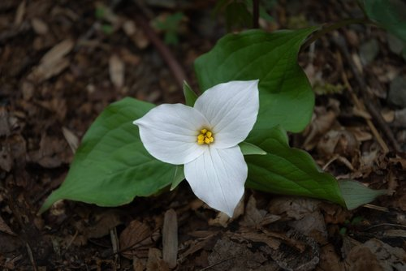
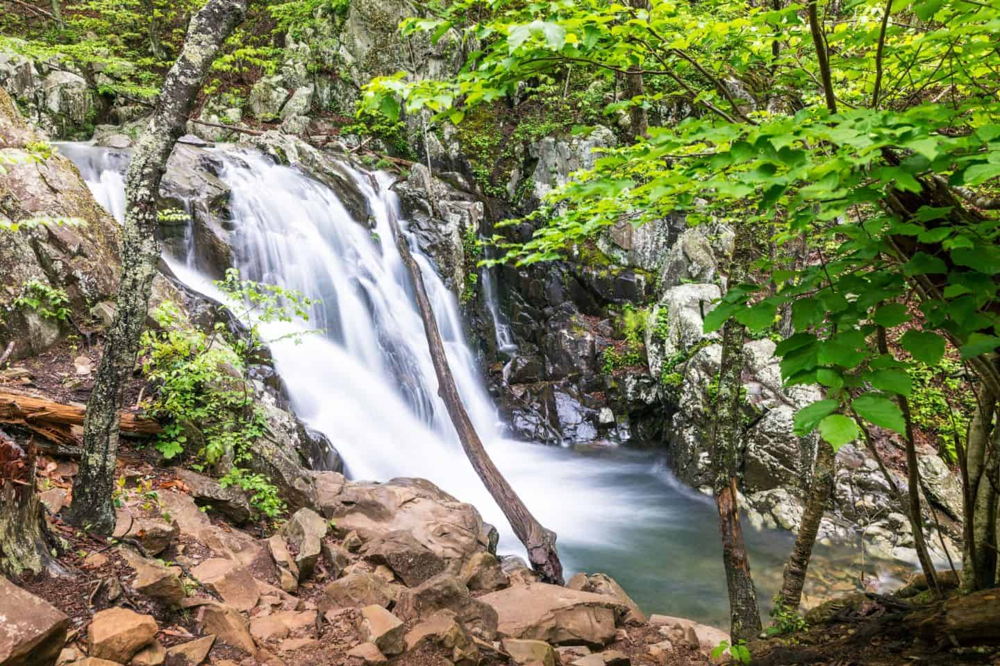
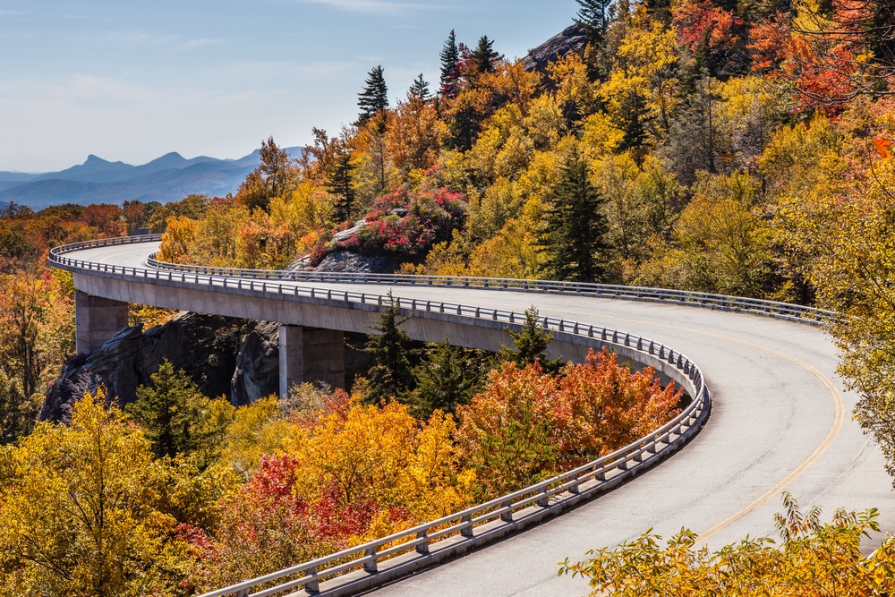
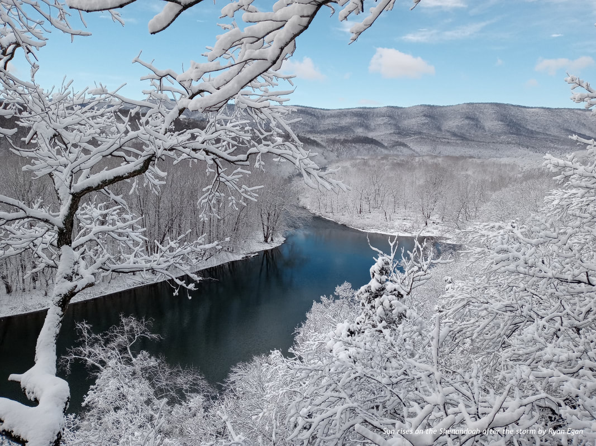

Shenandoah Valley
Home
Trails
Hiking Tips
Seasons to Hike
Nearby Amentities
Restaurants and Cafes
Lodging Options
Campgrounds
Best Seasons to Hike
Explore how each season offers a different perspective of the Shenandoah Valley
Spring (March - May)
Weather consists of cool mornings and mild afternoons, with temperatures ranging from the mid-40s°F to 70s°F (4°C - 24°C).

Features:
Abundant wildflowers like trilliums and Virginia bluebells.
Active wildlife emerging from winter.
Tips:
Prepare for muddy trails due to spring rains.
Dress in layers for variable temperatures.
Summer (June - August)
Weather varies from warm to hot, with daytime temperatures in the 70s°F to 90s°F (24°C - 32°C). Humidity can make it feel warmer.

Features:
Dense, lush greenery.
Popular time for waterfalls, like Dark Hollow Falls.
Tips:
Start hikes early to avoid midday heat.
Stay hydrated and wear breathable clothing.
Fall (September - November)
Weather is cool and crisp, with temperatures ranging from the 40s°F to 70s°F (4°C - 24°C). Nights can be chilly.

Features:
Spectacular fall foliage, typically peaking in mid-to-late October.
Clearer skies and lower humidity.
Tips:
Bring a jacket for cooler mornings and evenings.
Expect crowded trails during peak foliage season.
Winter (December - February)
Weather is cold, with daytime highs in the 30s°F to 50s°F (-1°C - 10°C). Nights often drop below freezing, and snow is possible at higher elevations.

Features:
Bare trees reveal unique views of the valley.
Less crowded trails.
Tips:
Wear insulated layers and sturdy boots for icy conditions.
Check for trail closures due to snow or ice.